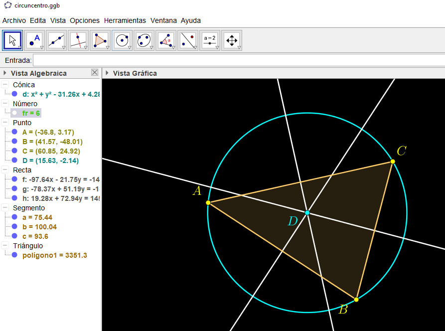

Integración con otras herramientas
Lo que hagamos con Geogebra no tiene por qué quedarse ahí. Sin ir más lejos, el menú de exportación ofrece un montón de opciones:

Crear y utilizar un gif para utilizar en Kahoot (por ejemplo)
El primer paso es elaborar la construcción. Ilustraremos el procedimiento de crear un gif haciendo una construcción para hallar el circuncentro de un triángulo.
El circuncentro es el punto en el que se intersecan las tres mediatrices de un triángulo y es el centro de la circunferencia circunscrita.
Para ello, la secuencia que podemos realizar es la siguiente:
- Crear el triángulo, mediante la herramienta «polígono».
- Trazar las mediatrices, para lo que viene bien la herramienta «mediatriz».
- Obviamente, se cortan en un punto, que no es otro que el circuncentro. Lo bautizamos en Geogebra con la herramienta «intersección».
- Como el punto así obtenido está a la misma distancia de A, B y C, es posible trazar la circunferencia que pasa por esos puntos, que circunscribe al triángulo.
- Ponemos los colorines a nuestro gusto, ocultamos rótulos y etiquetas que molesten y ya lo tenemos.
Ahora, lo que queríamos era realizar un gif animado para mostrar el proceso. Si eres un lector atento, de análisis minucioso, tal vez te hayas fijado en un objeto oculto en la anterior figura. Es un deslizador con los pasos (o fotogramas, si queremos) de los que constará la animación. Veamos lo que ocurre al desplazarlo desde 1 hasta 6:
Lo que estamos consiguiendo con el deslizador es ocultar y mostrar los objetos según nos convenga. Esto lo hacemos entrando en las propiedades avanzadas de cada objeto y especificando la condición para mostrarlo. En nuestro caso, el deslizador se llama «fr», y funciona como si fuera una variable numérica. En la figura siguiente observamos que la condición que hemos impuesto para mostrar la recta f (una de las mediatrices) es que , por lo que permanecerá oculta en los fotogramas 1, 2 y 3; y se mostrará en los fotogramas 4, 5 y 6.
Una vez tenemos montada así nuestra construcción, ocultamos el deslizador que hemos utilizado para montar la película y acudimos al menú de exportación, donde tendremos que indicar el deslizador en el cual se basa la animación, y alguna otra opción, como el tiempo entre fotogramas y si queremos que se repita en bucle.
El gif que hemos creado podemos utilizarlo en nuestro blog, en kahoot o en cualquier otro sitio. Las posibilidades de exportación de Geogebra son inmensas.